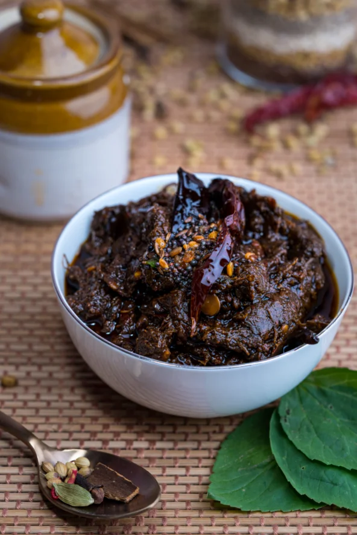

Best Time To Visit
NOV-FEB
Peak Season
JUL-OCT
Moderate Season
MAR-JUN
Off-Season
Languages Spoken : Telugu ,Tamil ,English
Region : Southern India

Culture & Cuisine
Tirupati is steeped in deep-rooted spiritual and cultural traditions, centered around the sacred Sri Venkateswara Temple. As one of the most visited pilgrimage sites in the world, the temple reflects a blend of Dravidian architecture, centuries-old rituals, and unwavering devotion. The temple's rituals, festivals like Brahmotsavam, and chants of “Govinda! Govinda!” create an atmosphere that's both energetic and reverent.
The local cuisine is a comforting showcase of Andhra flavors—simple, spicy, and soul-satisfying. The most iconic offering is the Tirupati Laddu, distributed as prasadam and loved by devotees across India. You’ll also find traditional South Indian fare such as Puliyodarai, Sambar, Idli, and Dosa served at local eateries and temple-run dining halls. Many visitors also enjoy the wholesome meals served at Anna Prasadam halls, which reflect the temple’s spirit of charity and community.

How to get there?
Tirupati Balaji in Andhra Pradesh draws millions yearly. You can get there via air, rail, or road transport easily. Plan your route for a smooth spiritual journey.

BY AIR
The nearest airport is Tirupati Airport (Renigunta), around 15 km from the city center. It has regular flights from Hyderabad, Chennai, and Bengaluru.

BY TRAIN
Tirupati Railway Station is a major stop in Andhra Pradesh, connected to cities like Chennai, Hyderabad, Delhi, and Mumbai. The station is close to the temple and well-served by autos and taxis.

BY CAR
Tirupati is well-linked by highways and has frequent buses from Chennai (135 km), Bengaluru (250 km), and Hyderabad (550 km). You can also hire taxis or drive via NH716 and NH69 for a scenic journey.